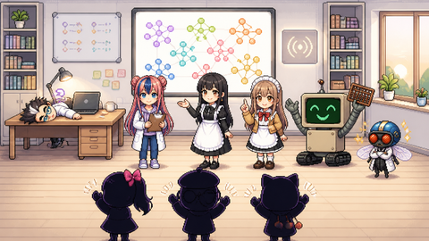
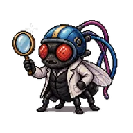
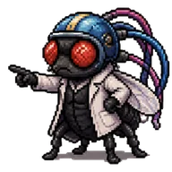

내 아이디어 검증하기
연구실에 쌓인 개념 지도(온톨로지)를 근거로, 쓰고 있는 생성 AI에게 내 아이디어를 확인해 달라고 요청하는 지시문을 만들어 드립니다.

앞줄은 방청객으로 온 미공개 X1·X2·X3입니다.
처음 오신 분께 — 이 페이지를 3줄로
- 무엇을: 분야를 고르고 아이디어를 쓰면, 연구실 개념 지도를 근거로 AI에게 검증을 맡기는 지시문이 만들어집니다.
- 왜 중요한가: AI가 출처 링크를 달아 답하고, 근거가 없는 말은 "일반 지식"이라고 따로 표시하게 됩니다.
- 업무에서는: 기획안·연구 아이디어를 발표하기 전에, 어디가 확인된 내용이고 어디가 내 추측인지 빠르게 가를 수 있습니다.
처음 보는 말 풀이 (펼치기)
- 온톨로지
- 개념과 개념 사이의 관계를 적어 둔 지도. 예: "역전파는 경사하강법보다 먼저 알아야 한다".
- RSS
- 사이트가 "지금 최신 내용은 이것"이라고 내놓는 정해진 형식의 파일. 뉴스 구독에 흔히 씁니다.
- JSON-LD
- 같은 내용을 기계가 읽기 좋게 적은 형식. 사람은 RSS만 쓰면 됩니다.
- 생성 AI
- ChatGPT, Claude, Gemini처럼 글로 답하는 AI.
오늘의 연구실 식구


튜토리얼 — 하루·시아·모아가 알려 드려요


① 분야 고르기
시아: 아이디어와 가까운 분야를 1~2개, 모르겠으면 '모두'.② 아이디어 쓰기
모아: 본 것 → 드는 생각 → 확인하고 싶은 질문 하나.관련 개념 미리 찾기
③ 지시문 복사하기
하루: 복사해서 평소 쓰는 AI 대화창에 그대로 붙이세요.지시문에는 AI가 읽기 쉬운 텍스트판 피드(.txt)가 들어갑니다. 그래도 AI가 링크를 읽지 못한다고 하면, 피드 주소를 브라우저로 열어 내용을 복사해 지시문 아래에 붙여 주세요.
④ 답 확인하기 — 답 확인 도우미

초파리 연구원: AI 답을 통째로 붙여 넣어. [피드] 링크가 진짜인지 내가 다 대조해 주지.AI 판단 코너 — 이 답, 믿어도 될까?
- [피드] 슬러츠키 행렬은 소득효과를 보정한 가격반응 행렬이다. (미시경제학 연구실 · 수요)
- [피드] 네트워크 효과: 사용자가 늘수록 재화의 가치가 커지는 현상. (ahnboat lab · 네트워크 효과 편)
- [일반 지식] 네트워크 효과가 크면 시장이 한 제품으로 쏠리는 일이 잦다.

시연: 네트워크경제학 × 신경망
위 '예시 불러오기'의 지시문을 경제·수학·최적화, 딥러닝·뇌과학 피드와 함께 Claude(Opus 5.5)에게 준 결과를 줄여 옮겼습니다(2026-11-24 기준 온톨로지). 왼쪽은 같은 생각으로 2025년 1월에 지시문만으로 나눈 대화입니다.
지시문만 (2025-01 대화)
- 둘 다 노드와 연결로 이뤄진다는 구조적 공통점을 일반론으로 정리
- 전통적 수요 Q = f(P, I, Ps)와 네트워크 수요 Q = f(P, I, Ps, N) 비교
- 상호의존성, 다중균형, 임계질량, 경로의존성을 차이로 제시
- 파이썬으로 수요곡선 세 개를 그리는 코드
- 근거 링크 없음 · 어디까지가 확인된 내용인지 구분 없음
피드와 함께 (2026-11-24)
- 사이트 개념 16개를 출처 링크와 함께 찾아 근거로 씀
- 닮은 점을 "연결을 행렬로 적는다"로 좁혀 냄
- 다른 점과 반례를 사이트 개념으로 제시
- 검증 방법으로 슬러츠키 조건 검사를 제안
- 네트워크 외부성·임계질량은 피드에 없다고 밝히고 일반 지식으로 구분
피드와 함께 받은 답 펼쳐 보기
1. 관련 개념
- [피드] 신경망 쪽: 가중치 — 입력을 얼마나 크게 들을지 정하는 값, 시냅스의 강도에 해당 · 커넥톰 — 뉴런과 시냅스 연결의 배선도, 구조일 뿐 세기는 따로 필요 · 초파리 커넥톰 뇌 모형 — 배선도를 연결 행렬로 씀 · 그래프 신경망 — 이웃끼리 메시지를 주고받으며 각 점의 표현을 고침
- [피드] 경제 연결망 쪽: 거래상대방 행렬 — 행은 보유자, 열은 발행자 · 전염 경로 · 금융망 상전이 — 작은 충격엔 촘촘한 연결이 안정을 높이지만 어느 지점을 넘으면 같은 연결이 전파 경로가 됨 · 청산 벡터 모형
- [피드] 수요 쪽: 마셜 수요 · 힉스 수요 · 대체효과·소득효과 · 힉스 분해 · 슬러츠키 행렬 — 소득효과를 보정한 가격반응 행렬, 대칭·음의 준정부호 · 금전적 외부성 — 가격을 통해 남에게 주는 영향, 비효율의 원인은 아님
- [찾지 못함] 네트워크 외부성, 네트워크 효과, 임계질량은 두 피드에 없습니다. 이 부분은 [일반 지식]입니다.
2. 닮은 점과 다른 점
- 닮은 점 [피드]: 두 쪽 모두 연결을 행렬로 적습니다. 경제는 거래상대방 행렬, 신경망은 커넥톰을 연결 행렬로 씁니다. 연결의 세기(채권액 / 가중치)가 결과를 정하고, 충격이나 신호가 연결을 따라 번진다는 점도 같습니다.
- 다른 점 [피드 + 일반 지식]: 신경망의 가중치는 오차를 줄이도록 학습으로 바뀌지만, 수요 쪽 연결은 소비자의 선택(효용극대화)으로 생깁니다. 그래서 수요에는 슬러츠키 행렬의 대칭·음의 준정부호 같은 합리성 조건이 붙고, 신경망 가중치에는 그런 조건이 없습니다.
- 주의 [피드]: 커넥톰 항목이 말하듯 배선도(구조)만으로는 부족하고 연결의 세기가 따로 필요합니다. 네트워크 크기 N 하나로 수요를 설명하는 것도 같은 한계를 가질 수 있습니다.
3. 반례·한계
- [피드] 금융망 상전이: 연결이 늘면 늘 좋아지는 것이 아니라 어느 지점을 넘으면 위험 전파로 바뀝니다. "사용자가 많을수록 가치가 커진다"는 네트워크 효과의 반대 방향도 가능하다는 반례입니다.
- [피드 + 일반 지식] 금전적 외부성은 비효율의 원인이 아니므로, 네트워크 효과 가운데 가격을 거쳐 전해지는 부분은 시장 실패로 보기 어렵습니다.
4. 확인 방법 [일반 지식]
- 소비자 연결망을 그래프로 놓고 그래프 신경망으로 수요를 예측해, 마셜 수요 모형과 예측력을 비교합니다.
- 추정한 가격반응 행렬이 슬러츠키 조건(대칭·음의 준정부호)을 만족하는지 검사합니다. 네트워크 효과가 크면 이 조건이 깨지는지가 핵심 확인 지점입니다.
- 연결 데이터는 피드의 상호연계비율처럼 한국은행 상세자금순환표에서 구할 수 있습니다.
5. 더 읽을 페이지: 미시경제학 연구실 · 소비자 선택 · 수요 · 외부성 · 돈의 경맥 3 · 초파리 특별편 1 · 신경망 구조 도감 2
덤으로 얻은 것: 고른 두 분야에는 '네트워크 효과·네트워크 외부성' 개념이 없었습니다. 사이트 전체로 넓히면 금융·핀테크 쪽에 '네트워크 효과'가 하나 있고, '네트워크 외부성'은 아직 어디에도 없습니다. 아이디어 검증이 곧 다음 콘텐츠 후보 찾기가 됩니다. (지금은 '관련 개념 미리 찾기'가 고르지 않은 분야의 개념도 알려 줍니다.)
다른 AI(ChatGPT)로도 같은 지시문을 돌려 봤습니다. 그 AI는 처음에 XML 피드를 읽지 못해 우회해서 읽었고(그래서 지금은 텍스트판 피드를 넣습니다), 답에 달린 연구실 링크 13개는 답 확인 도우미로 대조한 결과 모두 실제 개념 위치와 맞았습니다.
피드 주소
질문마다 답을 돌려주는 방식(API)이 아니라, "지금 이 분야의 최신 개념 지도 한 벌"이 필요하기 때문입니다. 원본이 바뀌면 하루 두 번 최신판으로 덮어씁니다. RSS 리더로 구독할 수도 있습니다.
생성 AI의 웹 읽기 도구는 한 번에 약 10만 자까지만 읽는 경우가 많습니다. 큰 분야는 AI용으로 나눈 파일(1·2)을 함께 만들고, 지시문에는 그 나눔 파일을 넣습니다.

| 분야 | 콘텐츠 | RSS (구독용 전체) | AI용 나눔 | JSON-LD |
|---|
AI 도구용 안내: llms.txt · 원본 온톨로지 전체: 온톨로지 지도
마무리